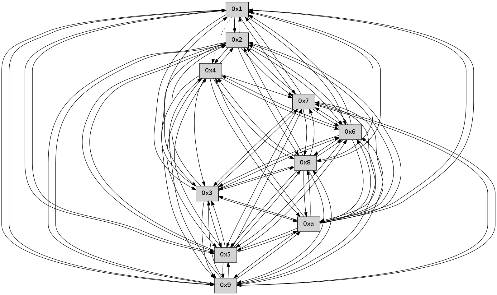

>> << IDX [start] -100 -25 -5 +0 +5 +25 +100 [335.384070158]
 Previous packets
----------------------------------------------------------------------
330.655280 beacon01(faad) #0 coord=01,02,03,04,05,06,07,0a,09,08 cycle=688.0ms assoc
-- color-indic=0 64 d3 da
330.665263 beacon02(faad) #0 coord=01,02,03,04,05,06,07,0a,09,08 cycle=688.0ms assoc 64 40 eb
330.675263 beacon03(faad) #0 coord=01,02,03,04,05,06,07,0a,09,08 cycle=688.0ms assoc 64 3a a6
330.685264 beacon04(faad) #0 coord=01,02,03,04,05,06,07,0a,09,08 cycle=688.0ms assoc 64 4d 4c
330.695264 beacon05(faad) #0 coord=01,02,03,04,05,06,07,0a,09,08 cycle=688.0ms assoc 64 37 01
330.705264 beacon06(faad) #0 coord=01,02,03,04,05,06,07,0a,09,08 cycle=688.0ms assoc 64 b9 d6
330.715266 beacon07(faad) #0 coord=01,02,03,04,05,06,07,0a,09,08 cycle=688.0ms assoc 64 c3 9b
330.725269 beacon0a(faad) #0 coord=01,02,03,04,05,06,07,0a,09,08 cycle=688.0ms assoc 64 b2 90
330.735268 beacon09(faad) #0 coord=01,02,03,04,05,06,07,0a,09,08 cycle=688.0ms assoc 64 3c 47
330.745268 beacon08(faad) #0 coord=01,02,03,04,05,06,07,0a,09,08 cycle=688.0ms assoc 64 46 0a
330.756427 [Hello(7): seq=215 sym=2,3,5,6,4,8,9,10,1 sysInfo= stat=2:6,0,0,0/3:5,0,0,0/5:13,0,0,0/6:5,0,0,0/4:8,0,0,0/8:11,0,0,0/9:14,0,0,0/10:10,0,0,0/1:13,0,0,0]
330.761667 [Hello(8): seq=158 sym=5,2,3,4,7,6,9,10,1 sysInfo= stat=5:5,0,0,0/2:7,0,0,0/3:6,0,0,0/4:4,0,0,0/7:1,0,0,0/6:5,0,0,0/9:6,0,0,0/10:6,0,0,0/1:15,0,0,0]
330.764685 [Hello(10): seq=147 sym=6,3,2,5,9,8,7,4,1 sysInfo= stat=6:1,0,0,0/3:9,0,0,0/2:2,0,0,0/5:1,0,0,0/9:15,0,0,0/8:8,0,0,0/7:6,0,0,0/4:8,0,0,0/1:8,0,0,0]
----------------------------------------------------------------------
331.443412 beacon01(faad) #0 coord=01,02,03,04,05,06,07,0a,09,08 cycle=688.0ms assoc
-- color-indic=0 64 17 d4
331.453394 beacon02(faad) #0 coord=01,02,03,04,05,06,07,0a,09,08 cycle=688.0ms assoc 64 84 e5
331.463394 beacon03(faad) #0 coord=01,02,03,04,05,06,07,0a,09,08 cycle=688.0ms assoc 64 fe a8
331.473397 beacon04(faad) #0 coord=01,02,03,04,05,06,07,0a,09,08 cycle=688.0ms assoc 64 89 42
331.483395 beacon05(faad) #0 coord=01,02,03,04,05,06,07,0a,09,08 cycle=688.0ms assoc 64 f3 0f
331.493396 beacon06(faad) #0 coord=01,02,03,04,05,06,07,0a,09,08 cycle=688.0ms assoc 64 7d d8
331.503396 beacon07(faad) #0 coord=01,02,03,04,05,06,07,0a,09,08 cycle=688.0ms assoc 64 07 95
331.513399 beacon0a(faad) #0 coord=01,02,03,04,05,06,07,0a,09,08 cycle=688.0ms assoc 64 76 9e
331.523399 beacon09(faad) #0 coord=01,02,03,04,05,06,07,0a,09,08 cycle=688.0ms assoc 64 f8 49
331.533400 beacon08(faad) #0 coord=01,02,03,04,05,06,07,0a,09,08 cycle=688.0ms assoc 64 82 04
331.546467 [Hello(4): seq=216 sym=5,7,6,2,3,9,8,10 sysInfo= stat=5:7,0,0,0/7:4,0,0,0/6:8,0,0,0/2:10,0,0,0/3:15,0,0,0/9:0,0,0,0/8:10,0,0,0/10:11,0,0,0]
331.556334 [Hello(5): seq=216 sym=7,6,4,3,1,9,8,10,2 sysInfo= stat=7:2,0,0,0/6:8,0,0,0/4:8,0,0,0/3:11,0,0,0/1:0,0,0,0/9:15,0,0,0/8:4,0,0,0/10:8,0,0,0/2:9,0,0,0]
----------------------------------------------------------------------
332.231542 beacon01(faad) #0 coord=01,02,03,04,05,06,07,0a,09,08 cycle=688.0ms assoc
-- color-indic=0 64 ab d1
332.241524 beacon02(faad) #0 coord=01,02,03,04,05,06,07,0a,09,08 cycle=688.0ms assoc 64 38 e0
332.251525 beacon03(faad) #0 coord=01,02,03,04,05,06,07,0a,09,08 cycle=688.0ms assoc 64 42 ad
332.261526 beacon04(faad) #0 coord=01,02,03,04,05,06,07,0a,09,08 cycle=688.0ms assoc 64 35 47
332.271526 beacon05(faad) #0 coord=01,02,03,04,05,06,07,0a,09,08 cycle=688.0ms assoc 64 4f 0a
332.281525 beacon06(faad) #0 coord=01,02,03,04,05,06,07,0a,09,08 cycle=688.0ms assoc 64 c1 dd
332.291526 beacon07(faad) #0 coord=01,02,03,04,05,06,07,0a,09,08 cycle=688.0ms assoc 64 bb 90
332.301530 beacon0a(faad) #0 coord=01,02,03,04,05,06,07,0a,09,08 cycle=688.0ms assoc 64 ca 9b
332.311532 beacon09(faad) #0 coord=01,02,03,04,05,06,07,0a,09,08 cycle=688.0ms assoc 64 44 4c
332.321533 beacon08(faad) #0 coord=01,02,03,04,05,06,07,0a,09,08 cycle=688.0ms assoc 64 3e 01
332.332703 [Hello(10): seq=148 sym=6,3,2,5,9,8,7,1 sysInfo= stat=6:1,0,0,0/3:10,0,0,0/2:2,0,0,0/5:2,0,0,0/9:15,0,0,0/8:8,0,0,0/7:6,0,0,0/1:9,0,0,0]
332.337956 [Hello(9): seq=159 sym=5,2,3,4,7,6,8,10,1 sysInfo= stat=5:13,0,0,0/2:12,0,0,0/3:13,0,0,0/4:5,0,0,0/7:0,0,0,0/6:8,0,0,0/8:13,0,0,0/10:13,0,0,0/1:2,0,0,0]
332.343519 [Hello(7): seq=216 sym=2,3,5,6,8,9,10,1 sysInfo= stat=2:7,0,0,0/3:5,0,0,0/5:14,0,0,0/6:6,0,0,0/8:12,0,0,0/9:14,0,0,0/10:11,0,0,0/1:14,0,0,0]
332.347375 [Hello(6): seq=216 sym=2,3,5,4,7,9,8,10,1 sysInfo= stat=2:10,0,0,0/3:8,0,0,0/5:11,0,0,0/4:4,0,0,0/7:10,0,0,0/9:1,0,0,0/8:1,0,0,0/10:15,0,0,0/1:13,0,0,0]
----------------------------------------------------------------------
333.019675 beacon01(faad) #0 coord=01,02,03,04,05,06,07,0a,09,08 cycle=688.0ms assoc
-- color-indic=0 64 7f e4
333.029657 beacon02(faad) #0 coord=01,02,03,04,05,06,07,0a,09,08 cycle=688.0ms assoc 64 ec d5
333.039656 beacon03(faad) #0 coord=01,02,03,04,05,06,07,0a,09,08 cycle=688.0ms assoc 64 96 98
333.049659 beacon04(faad) #0 coord=01,02,03,04,05,06,07,0a,09,08 cycle=688.0ms assoc 64 e1 72
333.059657 beacon05(faad) #0 coord=01,02,03,04,05,06,07,0a,09,08 cycle=688.0ms assoc 64 9b 3f
333.069657 beacon06(faad) #0 coord=01,02,03,04,05,06,07,0a,09,08 cycle=688.0ms assoc 64 15 e8
333.079659 beacon07(faad) #0 coord=01,02,03,04,05,06,07,0a,09,08 cycle=688.0ms assoc 64 6f a5
333.089662 beacon0a(faad) #0 coord=01,02,03,04,05,06,07,0a,09,08 cycle=688.0ms assoc 64 1e ae
333.099662 beacon09(faad) #0 coord=01,02,03,04,05,06,07,0a,09,08 cycle=688.0ms assoc 64 90 79
333.109663 beacon08(faad) #0 coord=01,02,03,04,05,06,07,0a,09,08 cycle=688.0ms assoc 64 ea 34
333.120844 [Hello(2): seq=214 sym=5,7,6,3,9,8,10 sysInfo= stat=5:2,0,0,0/7:14,0,0,0/6:8,0,0,0/3:3,0,0,0/9:10,0,0,0/8:8,0,0,0/10:7,0,0,0]
333.123812 [Hello(5): seq=217 sym=7,6,3,9,8,10,2 sysInfo= stat=7:3,0,0,0/6:9,0,0,0/3:11,0,0,0/9:0,0,0,0/8:5,0,0,0/10:8,0,0,0/2:9,0,0,0]
333.126500 [Hello(4): seq=217 sym=5,7,6,2,3,9,8,10 sysInfo= stat=5:8,0,0,0/7:5,0,0,0/6:9,0,0,0/2:11,0,0,0/3:15,0,0,0/9:1,0,0,0/8:10,0,0,0/10:12,0,0,0]
333.129743 [Hello(3): seq=217 sym=7,6,2,8,9,10,5 sysInfo= stat=7:0,0,0,0/6:13,0,0,0/2:8,0,0,0/8:1,0,0,0/9:7,0,0,0/10:2,0,0,0/5:5,0,0,0]
333.134079 [Hello(1): seq=125 sym=2,9,5,10,3,8,6,7 asym=4 sysInfo= stat=2:10,0,0,0/9:5,0,0,0/5:14,0,0,0/10:10,0,0,0/3:8,0,0,0/8:5,0,0,0/6:12,0,0,0/7:0,0,0,0/4:8,0,0,0]
----------------------------------------------------------------------
333.807808 beacon01(faad) #0 coord=01,02,03,04,05,06,07,0a,09,08 cycle=688.0ms assoc
-- color-indic=0 64 c3 e1
333.817790 beacon02(faad) #0 coord=01,02,03,04,05,06,07,0a,09,08 cycle=688.0ms assoc 64 50 d0
333.827791 beacon03(faad) #0 coord=01,02,03,04,05,06,07,0a,09,08 cycle=688.0ms assoc 64 2a 9d
333.837790 beacon04(faad) #0 coord=01,02,03,04,05,06,07,0a,09,08 cycle=688.0ms assoc 64 5d 77
333.847791 beacon05(faad) #0 coord=01,02,03,04,05,06,07,0a,09,08 cycle=688.0ms assoc 64 27 3a
333.857791 beacon06(faad) #0 coord=01,02,03,04,05,06,07,0a,09,08 cycle=688.0ms assoc 64 a9 ed
333.867792 beacon07(faad) #0 coord=01,02,03,04,05,06,07,0a,09,08 cycle=688.0ms assoc 64 d3 a0
333.877796 beacon0a(faad) #0 coord=01,02,03,04,05,06,07,0a,09,08 cycle=688.0ms assoc 64 a2 ab
333.887797 beacon09(faad) #0 coord=01,02,03,04,05,06,07,0a,09,08 cycle=688.0ms assoc 64 2c 7c
333.897796 beacon08(faad) #0 coord=01,02,03,04,05,06,07,0a,09,08 cycle=688.0ms assoc 64 56 31
333.909261 [Hello(9): seq=160 sym=5,2,3,4,7,6,8,10,1 sysInfo= stat=5:14,0,0,0/2:13,0,0,0/3:14,0,0,0/4:6,0,0,0/7:1,0,0,0/6:9,0,0,0/8:13,0,0,0/10:13,0,0,0/1:3,0,0,0]
333.913885 [Hello(10): seq=149 sym=6,3,2,5,9,8,7,4,1 sysInfo= stat=6:2,0,0,0/3:11,0,0,0/2:3,0,0,0/5:3,0,0,0/9:0,0,0,0/8:8,0,0,0/7:7,0,0,0/4:0,0,0,0/1:10,0,0,0]
333.916901 [Hello(6): seq=217 sym=2,3,5,4,7,9,8,10,1 sysInfo= stat=2:11,0,0,0/3:9,0,0,0/5:12,0,0,0/4:5,0,0,0/7:10,0,0,0/9:1,0,0,0/8:1,0,0,0/10:15,0,0,0/1:14,0,0,0]
333.924051 [Hello(7): seq=217 sym=2,3,5,6,8,9,10,1 sysInfo= stat=2:8,0,0,0/3:6,0,0,0/5:15,0,0,0/6:7,0,0,0/8:12,0,0,0/9:14,0,0,0/10:11,0,0,0/1:15,0,0,0]
----------------------------------------------------------------------
334.595939 beacon01(faad) #0 coord=01,02,03,04,05,06,07,0a,09,08 cycle=688.0ms assoc
-- color-indic=0 64 07 ef
334.605921 beacon02(faad) #0 coord=01,02,03,04,05,06,07,0a,09,08 cycle=688.0ms assoc 64 94 de
334.615921 beacon03(faad) #0 coord=01,02,03,04,05,06,07,0a,09,08 cycle=688.0ms assoc 64 ee 93
334.625922 beacon04(faad) #0 coord=01,02,03,04,05,06,07,0a,09,08 cycle=688.0ms assoc 64 99 79
334.635922 beacon05(faad) #0 coord=01,02,03,04,05,06,07,0a,09,08 cycle=688.0ms assoc 64 e3 34
334.645922 beacon06(faad) #0 coord=01,02,03,04,05,06,07,0a,09,08 cycle=688.0ms assoc 64 6d e3
334.655923 beacon07(faad) #0 coord=01,02,03,04,05,06,07,0a,09,08 cycle=688.0ms assoc 64 17 ae
334.665927 beacon0a(faad) #0 coord=01,02,03,04,05,06,07,0a,09,08 cycle=688.0ms assoc 64 66 a5
334.675928 beacon09(faad) #0 coord=01,02,03,04,05,06,07,0a,09,08 cycle=688.0ms assoc 64 e8 72
334.685927 beacon08(faad) #0 coord=01,02,03,04,05,06,07,0a,09,08 cycle=688.0ms assoc 64 92 3f
334.697064 [Hello(3): seq=218 sym=1,7,6,2,8,9,10,5 sysInfo= stat=1:0,0,0,0/7:1,0,0,0/6:14,0,0,0/2:8,0,0,0/8:1,0,0,0/9:8,0,0,0/10:3,0,0,0/5:5,0,0,0]
334.701729 [Hello(1): seq=126 sym=2,9,5,10,3,8,6,7 asym=4 sysInfo= stat=2:10,0,0,0/9:6,0,0,0/5:14,0,0,0/10:11,0,0,0/3:8,0,0,0/8:5,0,0,0/6:13,0,0,0/7:1,0,0,0/4:8,0,0,0]
334.706253 [Hello(5): seq=218 sym=7,6,4,3,1,9,8,10,2 sysInfo= stat=7:4,0,0,0/6:10,0,0,0/4:0,0,0,0/3:12,0,0,0/1:0,0,0,0/9:1,0,0,0/8:5,0,0,0/10:9,0,0,0/2:9,0,0,0]
334.710282 [Hello(2): seq=215 sym=4,5,7,6,3,9,8,10,1 sysInfo= stat=4:0,0,0,0/5:3,0,0,0/7:15,0,0,0/6:9,0,0,0/3:4,0,0,0/9:11,0,0,0/8:8,0,0,0/10:8,0,0,0/1:0,0,0,0]